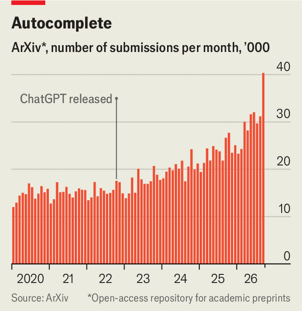

Could AI help scientists with their paperwork?
Yes—but that amplifies existing problems
Oct 15th 2026
THE STEREOTYPE of a scientist is someone who wears a white coat and toils in a laboratory, doing experiments with test tubes. In reality, researchers spend a surprising amount of time doing paperwork: writing grant applications, drafting and reviewing scientific papers, and reading new results in journals. If there is one thing that modern artificial-intelligence systems are good at handling, however, it is language. So could AI make scientists more productive by handling some of these tasks, freeing them to spend more time on actual research? That is possible. But AI has also made it easier to produce low-quality and even fraudulent science, which is overwhelming systems of moderation and peer review. Which trend will win out?
A survey of Australian scientists found that they spent between one and three months a year, or 16% of their time on average, preparing research proposals. Other studies have shown that a typical grant application takes around 34 days of work to prepare, and the success rate is only around 20%. So it is hardly surprising that around a quarter of researchers are using AI tools to speed up the process, according to a survey published in April by Elsevier, a publisher of scientific journals. James Wilsdon, who studies research policy at University College London, gives the example of a researcher he spoke to at an Ivy League university. Having previously spent one day a week writing grant proposals, the researcher now spends 45 minutes, thanks to AI. “The extra capacity that is being unlocked by all of this is immense,” says Dr Wilsdon.

A similar transformation is under way at a later stage of the scientific process: the drafting of papers describing research outcomes, and their vetting by peers for inclusion in scientific journals. As with grant proposals, the use of AI tools has made papers easier to write. Since the launch of ChatGPT in 2022 submissions to journals in the Science family and uploads to arXiv, the world’s largest preprint server, have grown (see chart). Fields like computer science, which rely less on experiments and lab work, have seen the biggest increases. From 2025 to 2026, paper submissions to the International Conference on Machine Learning (ICML) doubled to 24,000.
At first glance this may seem like a boon for science. More research should be a good thing. But AI-written papers are not necessarily better. One analysis of 2.5m biomedical science papers, published in the Lancet in May, found that the rate of fabricated citations increased 12-fold between 2023 and early 2026 to around 0.5%, probably as a result of increasing AI use. Examinations of papers in “predatory journals”, where authors pay for publication, find around 90% are AI-generated. “There’s been a very measurable increase at the bottom of the quality spectrum,” says Paul Ginsparg, the founder of arXiv.
A surge in bogus papers is a problem. For one thing, estimates Simon Linacre of Cabells, a company that classifies journals, fees to predatory journals amount to roughly $120m each year—money which could be spent on research. Bogus findings that are discovered erode public trust. Those that are not can cause real-world harm. In one notorious case, studies based on fabricated data were used to justify the widespread clinical practice of giving starch infusions to ill patients undergoing surgery. It took many years before their kidney-damaging properties were identified. AI may accelerate the spread of such misinformation too. In a recent demonstration, researchers based in Sweden uploaded two papers to a preprint server documenting a fictional eye disease called bixonimania. Within weeks AI chatbots, like Gemini and ChatGPT, were discussing the condition as if it were real.
AI advances have also made it harder for reviewers to tell at a glance if a paper is slop. AI models can nowadays easily mimic the jargon, tone and style that signal expertise in a field. A study published in Science in December found that, before large language models (LLMs), the sophistication of writing in a paper was generally a good guide to its scientific quality. Now that relationship has reversed.
AI tools can help with the problem they have caused, by detecting things like manipulated images, inconsistencies in the text or fully AI-generated content. More than half of reviewers were already using such tools in 2025, according to a survey carried out by Frontiers, another scientific publisher. With appropriate safeguards, AI could improve the peer-review process, says James Zou of Stanford University. Last year he conducted a study involving 40,000 reviews, half of which were written by humans, and half by humans who used AI. He found that AI-assisted reviewers were better at objective tasks such as finding inconsistencies and technical errors, while humans were better at subjective tasks such as assessing the novelty and impact of the research.
Funding organisations may be able to adopt similar solutions. One research foundation in Barcelona, for example, now uses AI to cull the least promising 20% of submissions, to reduce the load on its human assessors. But, says Dr Wilsdon, the whole idea of using written proposals to allocate funding may be obsolete. Writing in Nature, he and his colleague Geraint Rees, of University College London, conclude that the least-bad option may be to allocate funding using a combination of AI analysis, detailed scrutiny of applicants’ records and in-person interviews.
These ideas risk biasing grants towards existing institutions and researchers. That is ironic, because of the erstwhile hope that AI would democratise science, by helping non-native English speakers improve their writing. This has happened, but non-Anglophone researchers who use AI are no more likely to be published in leading journals now than they were previously. Indeed, in an effort to cope with rising submissions, arXiv has set up a system to flag to its moderators papers from new authors or those of unknown provenance.
Early-career scientists may also suffer. Drafting papers is part of how scientists hone their thinking. Many researchers worry about the risk of “cognitive surrender” whereby relying heavily on LLMs prevents students from developing a deep understanding of their subject.
The flood of papers also makes it harder for researchers to find the ones that matter. Dr Zou says he can read only about 100 papers a year in depth, out of tens of thousands published in his fields of interest. Fortunately, the deluge might be made easier to handle by AI tools creating personalised digests based on a researcher’s interests. Dr Zou is experimenting with ai agents that identify papers of potential interest to him, summarise them, find links to other papers, and then suggest new avenues for research.
Many researchers argue that AI has simply made existing problems in academia worse. To secure positions and win grants they are often judged on the number of papers they have published. This can encourage scientists to prioritise quantity over quality. There is evidence that AI-assisted submissions have risen fastest at institutions that reward productivity most directly. “AI is just the accelerant”, says Ivan Oransky, a founder of RetractionWatch, a database that documents dodgy publications. “The kindling is the publish-or-perish culture.” If scientists want to fix the problems caused by AI slop, fixing incentives is the place to start. ■